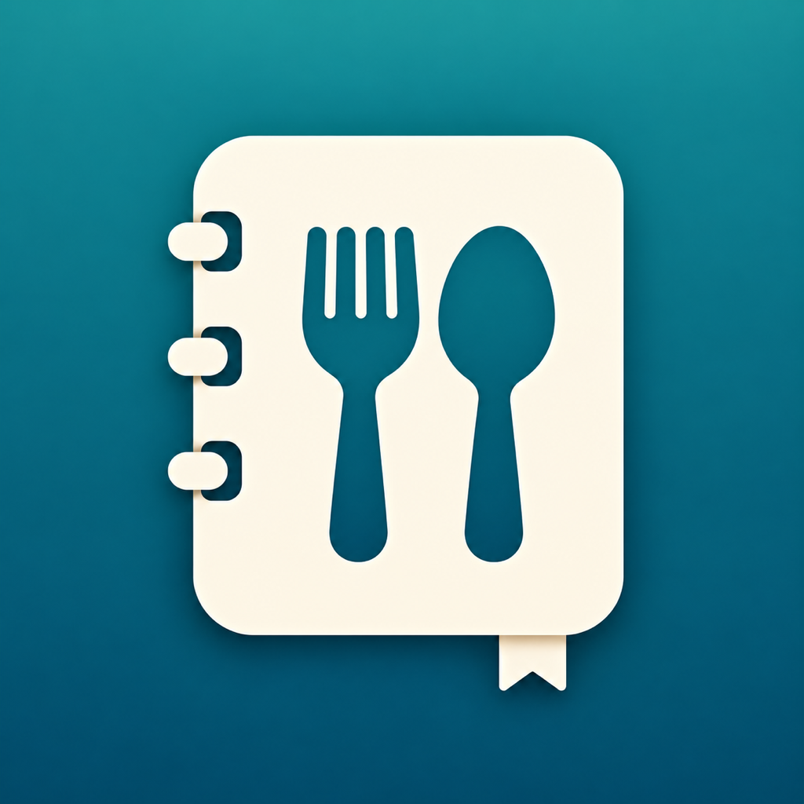

外食手帳外食手帳 サポート
使い方で困ったことや、ご要望はこちらから。
よくある質問
記録を追加するには？
「お店」タブの右下にある＋を押し、お店と料理名を入力して保存します。写真・評価・メモ・値段は必要に応じて追加できます。
位置情報やカメラの許可は必須ですか？
必須ではありません。お店の手入力や地図での場所指定、写真ライブラリの選択を使えます。店舗検索や地図表示には通信が必要です。
写真からお店が見つかりません
写真に位置情報が含まれていない場合や、近くのお店が検索で見つからない場合があります。お店を手入力するか、地図で場所を指定してください。
機種変更するときは？
記録と写真は端末内に保存されます。iCloudなどの端末バックアップと復元をご利用ください。バックアップの設定・対象・復元結果をご確認ください。
記録や写真を削除するには？
来店記録の「…」から削除できます。お店を削除すると、そのお店の来店記録も削除されます。アプリを削除すると端末内のデータも削除されます。
お問い合わせ
開発者：Takuya Ookura
GitHub Issuesで不具合やご要望を受け付けています。投稿にはGitHubへのログインが必要です。
お問い合わせ窓口を開く使用しているiPhone・iOS・アプリのバージョンと、問題が起きた操作を教えてください。公開の窓口なので、個人情報や非公開の写真は投稿しないでください。